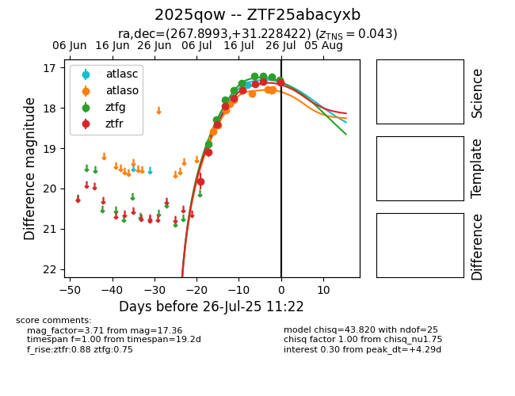

Target 2025qow at 2025-07-26 11:22, see:
FINK: fink-portal.org/2025qow
Lasair: lasair-ztf.lsst.ac.uk/objects/2025qow
ALeRCE: alerce.online/object/2025qow
TNS: wis-tns.org/object/2025qow
YSE: ziggy.ucolick.org/yse/transient_detail/2025qow
alt names
ZTF25abacyxb (ztf,fink)
2025qow (tns,yse)
coordinates:
equatorial (ra, dec) = (267.8993,+31.22842)
galactic (l, b) = (56.5223,+25.64952)
photometry
last atlasc=17.28, atlaso=17.56, ztfg=17.31, ztfr=17.36
2 atlasc, 9 atlaso, 9 ztfg, 9 ztfr detections
